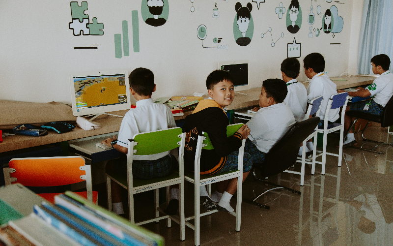

.jpg)
Games for Learning
Play. Learn. Grow
Welcome To Games for Learning - Your Partner in Educational Innovation
Games for Learning (GfL) is a pioneering company dedicated to transforming education through interactive and engaging digital solutions. We serve educators, students, and institutions across South Africa by providing innovative e-learning materials, e-books, and educational games that make learning both effective and fun. Our platform is accessible, secure, and designed to meet the diverse needs of learners and educators alike. Games for Learning (GfL) is a company that markets educational gaming material throughout South Africa. The educational gaming material includes, but is not limited to, e-learning resources, e-books, additional content to support e-books, and supplementary material to enhance e-learning. Additionally, GfL provides content designed to facilitate online gaming experiences aimed at promoting both entertainment and learning. These products are primarily advertised on their website, showcasing a range of interactive learning tools.
GfL’s mission is to create an engaging and innovative environment for students, educators, and independent learners, making education not only accessible but enjoyable. The company is dedicated to fostering the growth of digital learning by blending traditional education with the power of gaming. Their offerings cater to a broad spectrum of learning styles, ensuring that content is adaptable, engaging, and optimized for different educational needs.
They specialize in developing interactive modules for schools and learning institutions across South Africa. GfL's online gaming platforms are designed to build critical thinking, problem-solving, and collaboration skills in young learners. Furthermore, the company continually updates its offerings to align with the latest educational standards, ensuring that students and teachers alike have access to cutting-edge learning tools. In addition to its online platform, GfL hosts workshops, webinars, and educational events to train teachers and parents on how to maximize the use of gaming and digital tools in education. Their goal is to empower educators with the knowledge and skills to integrate these resources seamlessly into their curriculum.
They specialize in developing interactive modules for schools and learning institutions across South Africa. GfL's online gaming platforms are designed to build critical thinking, problem-solving, and collaboration skills in young learners. Furthermore, the company continually updates its offerings to align with the latest educational standards, ensuring that students and teachers alike have access to cutting-edge learning tools. In addition to its online platform, GfL hosts workshops, webinars, and educational events to train teachers and parents on how to maximize the use of gaming and digital tools in education. Their goal is to empower educators with the knowledge and skills to integrate these resources seamlessly into their curriculum.
Key Concepts
.jpg)
- Interactive Learning Modules
- Adaptive Educational Tools
- Problem-Solving Skills Development
- Collaboration and Critical Thinking
- Engaging Digital Content for Various Learning Styles
- Workshops, Webinars, and Training for Educators